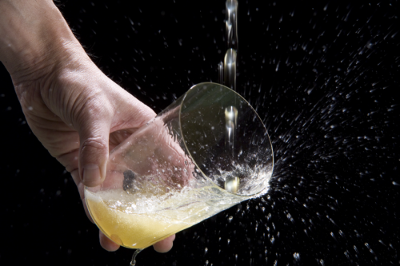

Platos más representativos:
- Fabada asturiana
- Cachopo
- Pote asturiano
- Arroz con leche
Productos típicos asturianos:
- Sidra natural
- Chorizo asturiano
-
Quesos asturianos:
- Cabrales
- Gamonéu
- Afuega'l Pitu
Definiciones
- Fabada asturiana
- Plato tradicional elaborado con fabes, chorizo, morcilla y tocino.
- Sidra natural
- Bebida fermentada de manzana típica de Asturias.
- Cachopo
- Filetes de ternera rellenos de jamón y queso, empanados y fritos.
| Plato | Ingrediente principal |
|---|---|
| Fabada | Fabes |
| Cachopo | Ternera |
| Pote asturiano | Berza |
| Cabrales | Leche de vaca, cabra y oveja |
Imagen
